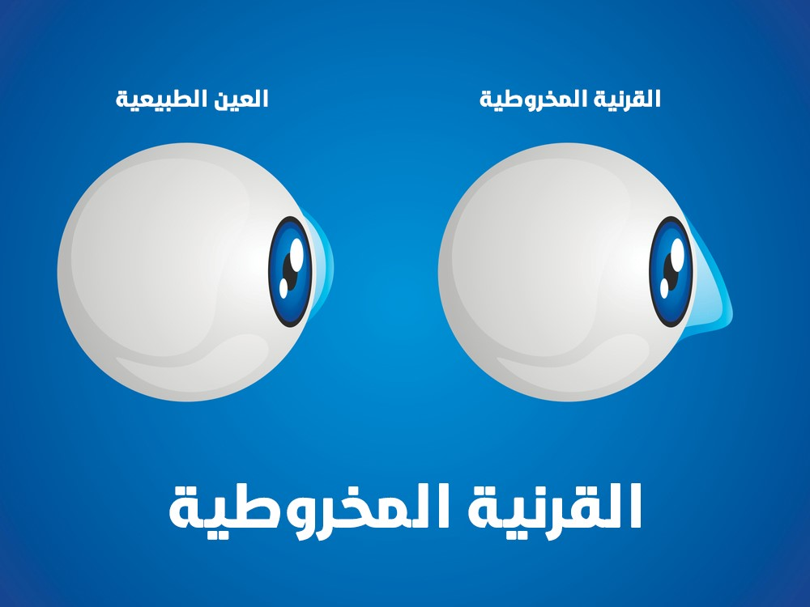
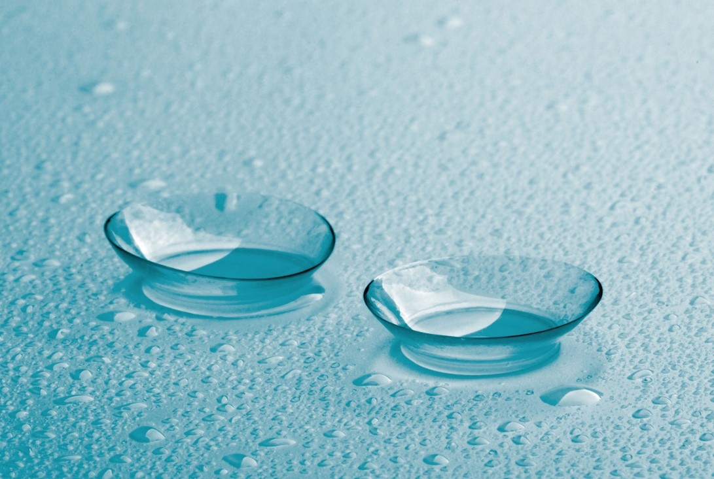

طب العيون في تركيا
يمكنكم الإطلاع على احدث التقنيات العلاجية في طب العيون في تركيا , تمتلك تركيا العديد من المستشفيات الطبية الحديث والتي تمتلك احدث الاجهزة الطبية والكوادر الطبية الخبيرة التي جعل من تركيا دولة مميزة في طب العيون

أحدث تقنيات علاج القرنية المخروطية والمقارنة بينها
تختلف طرق العلاج الأنسب حسب وضع كل حالة بشكل منفصل ، وتعد تركيا رائدة في مجالات الرعاية الصحية وبمعايير الطبية للإتحاد الأوروبي و بتكاليف أقل بكثير، وتتميزعلاجك الطبية بتقديم أحدث تقنيات التشخيص على أيدي أمهر الخبراء في مجال تصحيح النظر.
جدول المحتويات
- ماهي القرنية المخروطية ؟
- علاجات القرنية المخروطية " تحدب القرنية "
- تكلفة علاج القرنية المخروطية في اسطنبول تركيا
ماهي القرنية المخروطية ؟
القرنية المخروطية هي ترقق القرنية المشكلة للطبقة الخارجية للعين و التي ذات شكل يشبه القبة ، مع مرور الوقت القرنية تصبح مخروطية الشكل والرؤية تصبح ضبابية ومشوهة ، وهي حالة مرضية متقدمة ولكن مع العلاج يمكن أن تستقر العين ويمنع الحالة من التفاقم ، يقدر الباحثون أن واحدا من كل 2000 شخص يصابون باالقرنية المخروطية ، وهي أكثر شيوعاً بين السكان الآسيويين ، ولا سيما المنحدرون من أصل هندي ، ما بين 5 و 15 في المئة من الأشخاص الذين يعانون من متلازمة داون لديهم القرنية المخروطية.
ماهو الفرق بين القرنية المخروطية والطبيعية؟
تظهر هذه الصورة مظهر القرنية الطبيعية لشخص بالغ ، حيث يظهر الوضوح والشكل الأملس والحواف الثابتة النظامية, بينما تظهر القرنية المخروطية بشكل مختلف حيث تؤدي إلى ترقق المنطقة المركزية للقرنية ، أي السطح الأمامي للعين ، ومع تقدم الحالة يتسبب ضغط العين الطبيعي في تشوه الشكل الدائري للقرنية ويتطور انتفاخ غير منتظم يشبه المخروط ، مما يؤدي إلى ضعف بصري كبير.

علاجات القرنية المخروطية " تحدب القرنية "
يركز علاج القرنية المخروطية على تصحيح الرؤية ويعتمد على مرحلة المرض ، وتتنوع طرق العلاج بين استخدام النظارات والعدسات الطبية وبين استخدام حلقات وأجهزة طبية والعمليات .
- في المرحلة المبكرة علاج للقرنية المخروطية يتضمن النظارات خاصة في حالات علاج قصر النظر والنظر اللابؤري.
- مع تقدم القرنية المخروطية وتفاقمها لم تعد النظارات قادرة على توفير رؤية واضحة ، ويحتاج المرضى إلى ارتداء عدسة لاصقة ، عادة ما تكون عدسة لاصقة لينة ، لكن مع تقدم الحالة بشكل أكبر وتغير القرنية سيحتاج لتغييرها بشكل مستمر ، وسيشعر المصاب بعدم راحة ومن ثم سيفضل استعمال العدسات الصلبة النافذة للغاز.
- في المرحلة المتوسطة: يمكن علاجه عبر عملية بسيطة وتدعى تصليب القرنية بالكولاجين ، ومع ذلك لا يمكن لها أن تعيد القرنية كما كانت ، ولكن يمكنها تحسين الرؤية ومنع تفاقم وضع القرنية إلى الأسوء.
- في المرحلة المتنقدمة: مع اشتداد الحالة سيتم اللجوء إلى عملية استخدام حلقات القرنية ، وخاصة حين تفشل العدسات في تحسين الرؤية .
- في النهاية يمكن اللجوء إلى عملية زرع القرنية التي تم التبرع بها من شخص أخر ، وعمليات أخرى ممكنة كرأب القرنية PK/PKA ، رأب القرنية الجزئي ، رأب القرنية الموجه بالطبوغرافيا (CK) ، زرع القرنية الإصطناعية.
وتقدم علاجك خدمة الإستشارة المجانية ومع إمكانية إرسال الصور والتقارير الطبية ومع خدمة العناية الطبية االاحترافية ، من المطار حتى انتهاء رحلتك العلاجية.
علاج تحدب القرنية بال العدسات التصحيحية
العدسات هذه تفيد في المراحل الأولى للقرنية المخروطية ، وهي لا تعالج القرنية المخروطية لكن تصحح ضعف النظرالمرافق ، وقد يضطر المريض لتغييرها بشكل مستمر أو دمج عدة أنواع حسب ماينصح به الطبيب ، ومن أنواعها :العدسات اللاصقة الرقيقة المخصصة
العدسات اللاصقة الناعمة تميل إلى أن تكون مريحة جدا ، ولكن لأنها تلتف حول العين بشكل مطابق للسطح الأمامي لذلك عادة لا توفر أفضل تصحيح البصرية للقرنية المخروطية ، العدسات اللاصقة الناعمة الخاصة المصممة خصيصاً من أجل القرنية المخروطية هي أكثر سمكاً من العدسات اللينة العادية من أجل الاحتفاظ بشكل القرنية ، وفي الآونة الأخيرة أصبحت متاحة على شكل هيدروجيل السيليكون ذات النفاذية العالية للأوكسجين ويمكن صنعها حسب طلب الطبيب لتناسب حالة كل مريض بشكل منفرد.

العدسات اللاصقة النفَّاذة للغاز
- العدسات اللاصقة الرقيقة النافذة للغاز هي نوع متقدم من العدسات اللاصقة الرقيقة و مريحة أكثر للعين عبر سماحها بنفاذ الأوكسجين للقرنية، ، كونها أكثر مسامية من العدسات الجيل المائية ، وظهرت هذه العدسات اللاصقة والمكونة من سيليكون هيدروجيل في عام 2002، وهي الآن العدسات الأكثر شعبية الموصوفة في الولايات المتحدة.
- وتعد العدسات اللاصقة الصلبة النافذة للغاز هي الأخرى الأكثر استعمالا في الحالات المرضية المرتطبة بالعين كالقرنية المخروطية وخاصة في حالة النظر اللابؤري.
- لكن تثبيت هذه العدسات فوق القرنية المخروطية التي ذو الشكل المتغير بحاجة لخبرة جيدة.
العدسات اللاصقة "Piggybacking"
اذا كانت العدسات الصلبة غير مريحة قد ينصح طبيبك بإستخدام هذا النوع ، حيث يتم إستخدام العدسة اللاصقة الصلبة فوق العدسة اللاصقة الرقيقة ، ويقدم كلاهما تصحيح للرؤية ويتطلب وجود طبيب مختص لجعلها مناسبة لحالة القرنية المخروطية لدى المريض.
العدسات اللاصقة الهجينة
تتم باستخدام عدسة صلبة وحلقة رقيقة عند المحيط بهدف زيادة الراحة ، ويميل الأشخاص الذين يشعرون بعدم الراحة عند إستخدام العدسات اللاصقة الصلب لإستخدامها. حيث تتميز بإحتفاظها بميزة العدسات الصلبة بتحسين الرؤية لدى المصابين بالقرنية المخروطية وبنفس ميزة العدسات الرقيقة المريحة للعين.
العدسات الصلبة لعلاج القرنية المخروطية
- العدسات اللاصقة الصلبة (RGPs) هي العدسات اللاصقة الأكثر شيوعا والتي توصف في القرنية المخروطية لتوفير الحدة البصرية الأمثل ، أنها الأفضل على المدى الطويل ، حل غير جراحي لمعظم المرضى الذين يعانون من معتدلة إلى متقدمة (غير الشديدة) القرنية المخروطية.
- يمكن لمعظم المرضى عموما ارتداء RGPs طوال اليوم مع راحة جيدة و ورؤية ممتازة ، على الرغم من أنها يمكن أن تكون غير مريحة في البداية بسبب حساسية القرنية ، فإن المرضى يعتادون تدريجيا على ارتدائها وبعد 2-4 أسابيع لا يشعرون بوجودها
- ويوجود ضرورة للفحص الدورية خلال فترة 6 إلى 12 شهر للتأكد من عدم تطور القرنية المخروطية وأن هذه العدسات المنفذة للغاز مازالت تناسب الحال وبوضع جيد ، وأن الرؤية مازالت ثابت .
- توجد بقطر 7.5 إلى 9 ملم ، لكن بسبب الحاجة للتركيز أكثرعلى القرنية المخروطية تم إنتاج عدسات أكبر لتكون مريحة أكثر للمريض وتغطي مساحة أكبر من العين وذات أبعاد 10 إلى 16 ملم.
العدسات اللاصقة المغطية لصُلبة العين
هذه العدسات ذو أبعاد كبيرة ونافذة للغاز، كبيرة بشكل كاف ليغطي كل المنطقة البيضاء من العين لترتكز عليها ، ولأن مركز العدسة المتصلبة sclera تستقر بشكل قوسي فوق القرنية ذات الشكل غير المنتظم فهذه العدسه لا تسبب الضغط وتسبب راحة أكبر ، هذه العدسات الكبيرة أكثر استقرارا من العدسات اللاصقة النافذة للغاز والتي تتحرك عند طرف العين بسبب أنها تغطي جزء فقط من القرنية.
العدسات اللاصقة الاصطناعية
العيون ذو الحالة المتنقدمة من القرنية المخروطية قد تطلب تصميم عدسات متصلبة إصطناعية ، هذا النظام يتطلب بالعادة تقنية فريدة لمطابقة الحالة الخاصة للقرنية المخروطية غير المنتظمة الشكل والذي يلتقط صور جميع الإنحناءات الموجودة على قرنية العين ، ومن ثم يتم إظهارها بشكل ثلاثي الأبعاد.
عمليات زراعة حلقات لعلاج القرنية المخروطية
شرائح الحلقات القوسية الشكل هذه والتي قد تدعى فيرارا تزرع بشكل جراحي على حافة للقرنية لتعيد تشكيل السطح الأمامي للعين برؤية واضحة ، وتعمل على نفس مبدأ توسيع حواف الخيمة وبتالي ستزيد تسطح القبة والتي تمثل القرنية ، قد تستلزم هذه الحلقات عندما يعاني مرضى القرنية المخروطية من سوء الرؤية مع العدسات اللاصقة أو النظارات ، وأظهرت الدراسات قوة هذه الطريقة في تحسين حدية الرؤية لمرضى القرنية المخروطية ، وتستغرق 15 دقيقة تقريبا لكل عين وتتميز بإمكانية عمل تغيير أو إزالة لها.رأب القرنية الموصلة الموجه طبوغرافيًا
اظهرت العديد من الدراسات أن رأب القرنية الموصلة الموجه طبوغرافيا CK تفيد في تسطيح عدم انتظام سطح القرنية ، العلاج يستخدم طاقة الصادرة من أمواج الراديو والمطبقة على نقاط متعددة محددة في القرنية لتعيد تشكيل سطح القرنية ، والخريطة الطبوغرافية المصنعة عبر الحاسوب تشكل صورة سطح العين والتي تساعد في صنع الخطة العلاجية الفريدة لكل حالة قرنية مخروطية فردية.زرع القرنية
بعض الأشخاص الذين يعانون من القرنية المخروطية لا يمكنهم تحمل عدسة لاصقة صلبة ، أو يصلون إلى النقطة التي لم تعد توفر فيها العدسات اللاصقة أو العلاجات الأخرى رؤية مقبولة , ويختلف نوع العملية حسب حاجة كل مريض بشكل منفرد ، فالبعض بحاجة لرأب القرنية والأخر يحتاج إلى زرع قرنية كامل أو زرع جزئي و غيرها من العمليات ، حتى بعد عملية الزرع قد يحتاج المريض على الأرجح إلى نظارات أو عدسات لاصقة للحصول على رؤية واضحة.
زرع القرنية الكلى
خلال زرع القرنية الكامل التقليدي أو رأب القرنية الإختراقي يقوم الأطباء بإزالة جزء كامل سمك من القرنية المركزية الخاصة بك واستبدالها مع الأنسجة المانحة ، حيث يتم إزالة مقطع دائري على شكل زر كامل من الأنسجة من القرنية المريضة أو المصابة باستخدام أداة قطع جراحية تسمى ليزر فيمتوزين ثانية ، ورغم خلو القرنية من الأوعية الدموية لكن في بعض الحالات قد يتم إعطاء المريض فمويا مثبطات مناعية. فتعد عملية زرع القرنية واحد من الحالات السريرية والتي قد يتم فيها تقويض الإستتباب المناعي للعين.
زرع القرنية الجزئى أو الطبقي
إن عملية زراعة القرنية الطبقي أو الجزئي يتم بإزالة طبقة أو جزء من القرنية ، سواء كان الأمامي أو الخلفي ، وتفيد في تقليل الإختلاطات التي قد تحدث بالزرع الكامل ، وأنواعها هي :
- رأب القرنية البطاني(EK) هي تقنية زراعة القرنية المفضلة لاستعادة الرؤية عندما تتوقف طبقة الخلايا البطانية الخلفية العميقة للقرنية عن العمل بشكل صحيح ، بشكل انتقائي يستبدل فقط طبقة المريضة من القرنية، وترك المناطق الصحية سليمة.
وهناك نوعين لها
- النوع الأول يتم فيه إستبدال ثلث قرنية المريض بنسج قرنية المتبرع ويدعى رأب البطاني بتجريد غشاء ديسيميه DSEK
- النوع الثاني يسمى رأب البطاني بغشاء ديسيميه (DMEK)، يستخدم طبقة أرق بكثير من الأنسجة المانحة ، الأنسجة المستخدمة في DMEK رقيقة للغاية وهشة ، هذا الإجراء هو أكثر صعوبة من DSEK ويستخدم بكثرة.
- رأب القرنية الصفائحي الأمامي ALK: يوجد طريقتين لإزالة الأنسجة من طبقات القرنية الأمامية والتي تتضمن الظهارة والسدى مع ترك البطانة الخلفية في مكانها ، وتحدد الطريقة حسب مكان الضرر في القرنية.
- إن كان على مستوى سطحي في الصفائح الأمامية فتدعى SALK ، وتترك الظهارة والسدى سليمة.
- بينما إن كانت على مستوى عميق وتصل للسدى فتدعى DALK .

زراعة القرنية الإصطناعية
في بعض الحالات اذا كان المريض غير مؤهل لعملية زراعة القرنية من متبرع فسيتم اللجوء لعملية زرع القرنية الإصطناعية ، بالإضافة أن بعض عمليات زراعة القرنية من المتبرعين قد تفشل ، وظهرت بداية هذا النوع من العملية في القرن 18 حيث تم إستخدام قطعة زجاجية في إستبدال القرنية.
عادة ما تكون مصنوعة من مادة خاملة بيولوجيا وعادة ما تكون محفوظة لتلك للمرضى المحتاجين وايضا في حالات مثل مرض المناعة الذاتية الشديد أو الحروق الكيميائية أو للمرضى الذين لديهم بالفعل فشل إعادة الزرع من متبرع أوأكثر.
عملية تصليب القرنية لعلاج القرنية المخروطية
عندما يتغير شكل القرنية تظهر أعراض كالضعف أو عدم وضوح الرؤية ، قصر النظر، الرؤية اللابؤرية أو زيادة الحساسية للضوء ، فتفيد هذه العملية ايضا كوقاية من تقدم الحالة المرضية مستقبلا ، حيث قد يؤدي إهمال القرنية المخروطية إلى الحاجة مستقبلا لعملية زرع القرنية والتي تتسم بصعوبة و تكاليف اكثر.
وهي عبارة عن عبر ربط الياف الكولاجين الموجودة في القرنية بشكل و تتم العملية بوضع قطرات العين التي تحتوي على الريبوفلافين على القرنية بعد التخدير الموضعي للعين ، ومن ثم إزالة ميكانيكية للظهارة ، و بعدها يقوم الطبيب بتسليط ضوء فوق البنفسجي على القرنية ، ذلك سيحفز الكولاجين على التصلب والتقوي أكثر والحفاظ عليها من الإنتفاخ ، وتستغرق العملية بين 60 إلى 90 دقيقة.
وهناك نوعان لهذه العملية ، مع إزالة الخلايا الطلائية للقرنية أو تركها ، ويفيد إزالة الطبقة الطلائية في تسهيل دخول قطرة الريبوفلافين للقرنية وبتالي تقويتها ، بينما بقاء عمل العملية مع بقاء الطبقة يستغرق وقت أطول ، لكنه يفيد في سرعة تحسين الرؤية وذو مضاعفات أقل ، وحاليا يمكن إستخدامها حتى في علاج القرنية المخروطية المتقدمة.
هل يمكن علاج القرنية المخروطية بالليزر؟
من العمليات العلاجية العينية رأب القرنية الشعاعي وهي عملية جراحية تقوم بعمل شقوق على شكل خطوط شعاعية في داخل القرنية لتعديل شكلها ، تتم عبر اللاسيك وأجهزة أخرى لعلاج ضعف وقصر النظر. استخدام الليزر واللاسيك هو مضاد استطباب في حالة القرنية لما تسببه من ضعف للقرنية عبر إزالة سدى القرنية ، وعلى نفس المبدأ تمنع هذه العملية في حالة القرنية المخروطية.مراحل علاج القرنيه المخروطيه
- بإعتبار القرنية المخروطية مرض يشتد مع مرور الوقت فتطبق علاجات مختلفة بناء على شدة الحالة المرضية ، النظارات والعدسات اللاصقة قد تستخدم في المراحل البدئية لتحسين الرؤية ، ومع تقدم الحالة لا تعود مفيدة ، وسيتطلب إستخدام العدسات اللاصقة الرقيقة أو الصلبة النافذة للغاز ، في حال عدم فائدة هذه الإجراءات لتحسين الرؤية أو اشتداد الحالة لدرجة متقدمة فقد ينصح الطبيب بعملية زرع القرنية أو تصالب القرنية.
- عملية تصليب القرنية تستخدم فقط في حالات اشتداد القرنية المخروطية ، لمنتصف عمر الثلاثينات يتطور المرض ومن ثم بالعادة يتوقف ، مما يجعل كبار العمر أقل احتياجات لمثل هذا النوع من العمليات.
- في الحالات التي لا يستفيد فيها المريض من العدسات اللاصقة أو من الإجراءات غير الجراحية قد ينصحك الطبيب بعملية زرع القرنية ، ويعود إختيار نوع العملية بشكل أساسي لمدى الضرر الموجود في القرنية ومكانه وهذا يعتمد بشكل كبير على التشخيص الصحيح وخبرة الطبيب ، تقدم علاجك أحدث تقنيات التشخيص أحدث تقنيات تصحيح الإبصار وطب العيون والتشخيص مع عدد كبير من الأطباء ذو الخبرة الواسعة.
- في يوم زراعة القرنية إما أن يعطى المريض مهدئًا على الاسترخاء ومخدر موضعي لتخدير عينيه، أو سيتم تنويمه قبل العملية ، في كلتا الحالتين لن يشعر بالألم .
- بعد بدء تأثير المسكنات يستعمل أداة لجعل العين مفتوحة طوال فترة العملية ، من ثم سيقوم الطبيب بأخذ المقاسات للقرنية المتضررة لتحديد حجم الأنسجة اللازمة من المريض المتبرع ، أي بتحديد مكان وكثافة الضرر بناء عليها سيتم إختيار الإجرءات التالية.
- ، يتم إجراء الجراحة على عين واحدة في كل مرة ، مقدار الوقت الذي يقضيه في العملية جراحية يعتمد على الوضع الخاص بالمريض ، تستغرق أغلب العمليات 30 إلى 90 دقيقة لكن فترة الزيارة بعد العمليات قد تكون بعد ساعات من انتهاء العملية.
- يوضع رقعة على العين بعد فترة العملية ليوم أو عدة أيام ، وتستمر الفحوصات الدورية أشهر.
مدة علاج القرنيه المخروطيه
- قد يستغرق وضع العدسات اللاصقة الرقيقة أو الصلبة النافذة للغاز أعواما لتحسين الرؤية ، وقد لا تعود تفيد للحالة المرضية .
- في حال عملية زرع الحلقات القرنية فستستغرق العملية لكل عين 15 دقيقة تقريبا ، و سيتم الإنتظار ساعات قبل السماح بالزيارات.
- عملية تصالب القرنية قد تستغرق مايقارب 90 دقيقة.
- بالنسبة للعمليات الأخرى فحسب نوع العملية قد تستغرق ساعة أو اكتر ، وقد يحتاج المريض لأيام للراحة بعد العملية ويمنع من ممارسة النشاطات الرياضية الشديدة.
- ويجب الإستمرار بالفحص الدوري حتى عام للتأكد من نجاح العملية وعدم إستمرار القرنية المخروطية.
نتائج و نسبة علاج القرنية المخروطية في تركيا
نسبة النجاح في العلاج عبر العدسات الصلبة النافذة للغاز تقارب 85% و تعود حالات الفشل إما لتأخر التشخيص وتقدم الحالة أو لعدم خبرة الطبيب المعالج ، نسبة نجاح عمليات زرع القرنية قد تصل إلى 90%. و حسب أحد الدراسات لعدد كبير من الذين قاموا بالعملية فقد كانت نسبة النجاح خلال السنة الأولى 91% وكانت النسبة 69% بعد 7 سنوات ، ويعد عدم التوافق مع قرنية المريض أحد أسباب فشل العملية وقد تصل إلى 10% ، وهنا يزداد الطلب على عمليات زراعة القرنية الإصطناعية ، وحسب إحصاءات حديثة يجرى أكثر من 100 الف عملية زرع قرنية حول العالم.تكلفة علاج القرنية المخروطية في اسطنبول تركيا
تختلف التكاليف حسب الأجهزة المستخدمة للعملية ومدى قوتها و نوع العملية ، وفي علاجك تبدأ تكلفة عملية علاج القرنية 3000 دولار لكلا العينين ، أي 1500 دولار للعين الواحدة.


اطلع على أحدث المنشورات والأخبار الطبية
عمليات شفط الدهون بالفيزر في تركيا والأسعار 2021
يعتبر شفط الدهون بالفيزر من أفضل عمليات علاج السمنة المفرطة. تعرف معنا على مميزات وعيوب شفط الدهون بالفيزر وكيف تتم العملية وشاهد الفرق قبل وبعد في تركيا.
طرق علاج طول النظر في تركيا وأحدث التقنيات
يعاني الكثير من كبار السن وحتى البالغين من مرض طول النظر . سنتحدث في هذا المقال عن كيفية علاج طول النظر وأسباب هذا المرض ونسبة نجاح العلاج .
الفرق بين زراعة الشعر في ايران وتركيا 2021
بالرغم من أن أسعار زراعة الشعر بين تركيا وايران لا تختلف كثيرا إلا أن هنالك الكثير من الفروق التي قد تحدد لك الدولة الأفضل لزراعة الشعر فيها.
طرق علاج قصر النظر في تركيا وأحدث التقنيات
يعاني الكثير من الأطفال وحتى البالغين من مرض قصر النظر. سنتعرف في هذا المقال على أفضل طرق علاج قصر النظر وأسباب هذا المرض ونسبة نجاح العلاج .